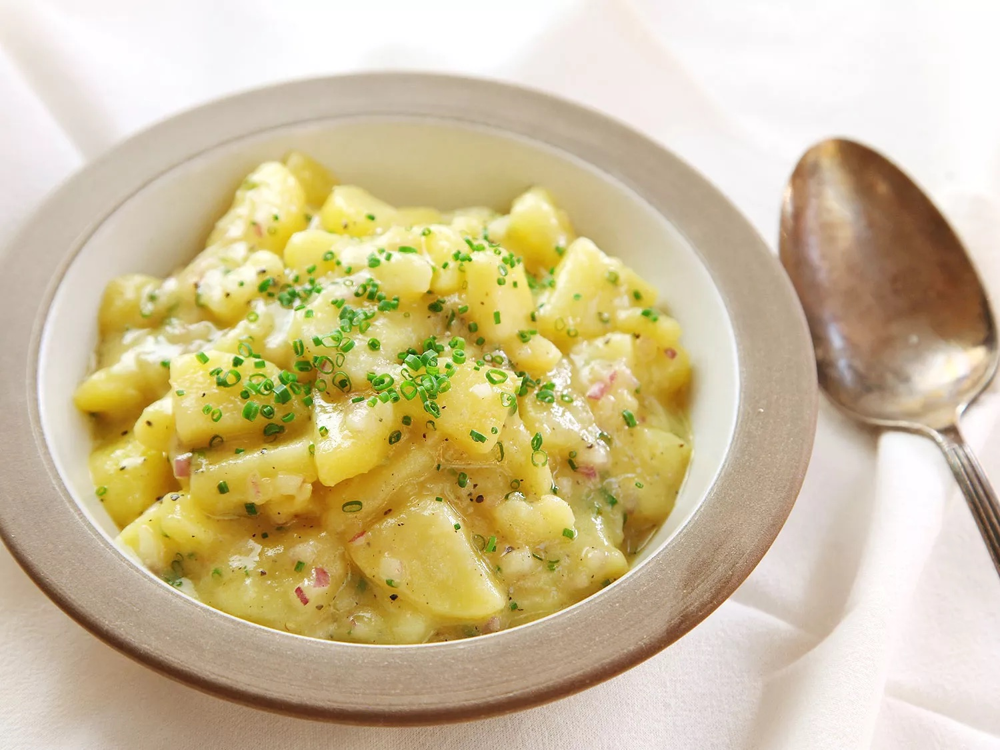

Viennese Style Potato Salad

Description:
What would the cuisine of any germanic country be without potatoes? Probably a lot healthier, now that I think about it...
Unlike other potato salads, the viennese potato salad is eaten warm. While it is usually classified as a side dish, it can also be eaten on its own. And if I may say so myself: it is an excellent hangover remedy. Will serve approximately four people.
Ingredients:
- 1 kg Waxy potatoes
- 2 red onion, finely chopped
- 0.5 litres warm beef broth
- 3 tablespoons of white wine or apple cider vinegar (Hint: for true viennese authenticity, try to get your hands on a bottle of Hesperiden vinegar)
- 5 tablespoons vegetable oil (The original recipe calls for canola oil, but other vegetable oils will work as well)
- A pinch of salt
- A pinch of pepper
- 1 teaspoon caraway seeds
- 1 teaspoon Estragon mustard
- 1 teaspoon sugar (optional)
- Finely cut chives and thinly cut onion rings for garnishment
Instructions:
- Wash (but do not peel!) potatoes, put them in a cooking pot and boil them until they are done
- Peel the potatoes and cut them into thin slices
- In a separate bowl, mix the warm beef broth, the finely chopped red onions, vinegar, salt, pepper, caraway seeds, mustard and sugar into a marinade
- Pour the marinade over the potatoes, let the salad sit for at least 1 hour
- Garnish the salad with the chives and the onion rings, serve immediately!